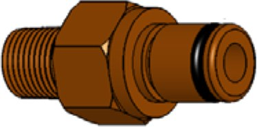
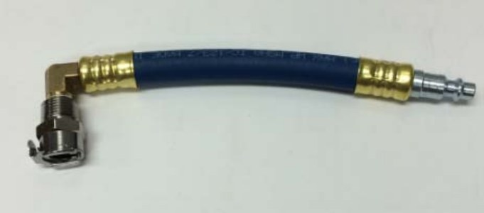

Doc no. MOC-TSB-15-19 // Vol. 15 No. 19 // Oct 30, 2015 // Transmission
GM ATF Pressure Port Adapter
New9479694898
MOC has developed a new transmission adapter to be used on the GM 6L80 transmissions to bypass the thermostat for quicker service. This new adapter (Part No. 94796) connects to the pressure port by way of a short 90 degree adapter hose (Part No. 94898), given the tight space around the pressure port. An open hose adapter can be used and inserted into the transmission dipstick tube.
What's new
Contact
For more information, contact the Machine & Equipment Department at 866.244.6621.


Known to fit
| Group | Vehicle |
|---|---|
| 2015 GM vehicles | Cadillac Escalade 6.2L |
| 2015 GM vehicles | Cadillac Escalade ESV 6.2L |
| 2015 GM vehicles | Chevy Silverado 4.3L, 5.3L, & 6.2L |
| 2015 GM vehicles | Chevy Suburban 5.3L |
| 2015 GM vehicles | Chevy Tahoe 5.3L & 6.2L |
| 2015 GM vehicles | GMC Sierra 4.3L, 5.3L, & 6.2L |
| 2014 GM vehicles | Chevy Silverado 4.3L, 5.3L, & 6.2L |
| 2014 GM vehicles | GMC Sierra 4.3L, 5.3L, & 6.2L |
Part numbers
| Part No. | Description | Notes |
|---|---|---|
| 94796 | Adapter, ATF Pressure Port, 1/8" NPT Hose | |
| 94898 | Assy, Pressure Port, 90° ATF |